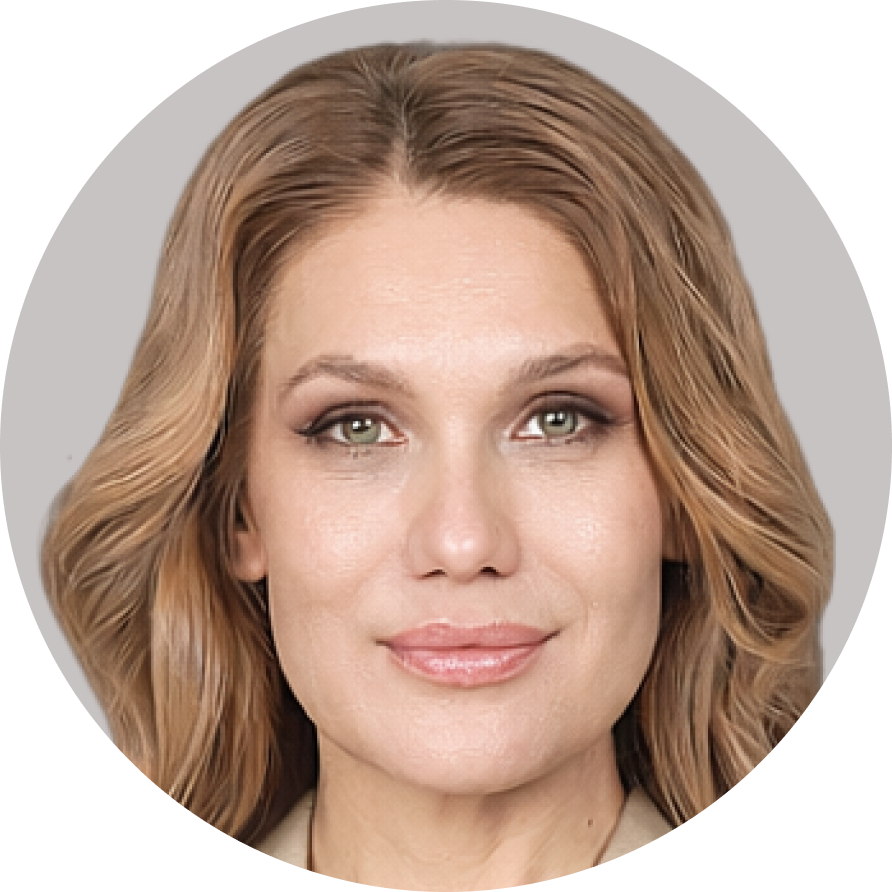

Коучингово-театральный практикум
для тех, кто уже многое знает и умеет.
И чувствует, что внутри есть ещё что-то.
Больше. Глубже. Живее.
25 апреля · 11:00–18:00 · Ibis Bucharest Politehnica
Мы — Анастасия и Ольга, приглашаем вас на авторский практикум.
Это не набор упражнений. Это продуманная система — со своей логикой, ритмом и драматургией. Это живой опыт — через движение, воображение, внимание, импровизацию и осознание.
В основе — методы профессионального актёрского мастерства, система Станиславского и профессиональный коучинг по стандартам международной федерации коучинга (ICF).
Встреча с собой в действии — в теле, в голосе, в проявлении.
Без оценок. Без давления. Без «надо правильно».
На работе. В семье. В переговорах. В сложном разговоре. В момент, когда нужно принять решение или просто сказать «нет». Везде мы проявляемся через роли. И везде — через своё состояние, голос, тело, внимание.
Вопрос только один — кто управляет этой ролью?
Вы — или автоматические реакции?
Мы создали этот практикум, потому что актёрское мастерство и коучинг встречаются в самом важном — в работе с человеком. С его вниманием, состоянием, выбором.
И мы решили соединить эти подходы в одном пространстве — через практику и живой опыт.
Посмотрите на себя со стороны — как на актёра своей жизни. Увидите, где вы проявляетесь ярко, а где сдерживаете себя. И осознаете: за каждой ролью есть вы — тот, кто её выбирает, наполняет смыслом и создаёт вдохновляющие сценарии.
Когда уходит лишнее напряжение и появляется творчество — из интереса, игры, импульса — появляется энергия. И из этого состояния хочется двигаться, пробовать новое и жить ярче.
Простые и действенные методы работы с телом, вниманием, голосом и состоянием — которые можно применять в лидерстве, работе, переговорах, выступлениях и личной жизни.
Главный инструмент актёра на сцене — он сам: его голос, эмоции, присутствие. Точно так же и в жизни: ваш главный инструмент — это вы. И ключевой навык — уметь себя настраивать.
Через прожитый опыт почувствуете разницу — в состоянии, восприятии и взаимодействии с собой и другими. Увидите свои сильные стороны. И поймёте, как интегрировать этот опыт в свою жизнь.
Актриса · Режиссёр · Театральный педагог
Актриса театра и кино. Двадцать лет на сцене. Главные роли. Режиссёр. Театральный и вокальный педагог для детей и взрослых. Сотни учеников, которых учит не играть — а проживать.
«Самый захватывающий момент в театре — когда роль оживает изнутри. Когда тело, голос, эмоция — всё становится одним целым. Это называется присутствие. И я знаю: это доступно всем. Не только актёрам.»
Когда человек начинает действовать творчески — из интереса, из собственного импульса, а не из «надо» — он оживает. Появляется энергия, которую не нужно выжимать из себя. Она просто есть. Именно это пространство я хочу открыть вам в этот день.

Профессиональный коуч ICF · Командный коуч ICF · Консультант по развитию бизнеса
Более 20 лет опыта в международном бизнесе и работе с людьми из разных культур и стран — как руководитель проектных команд и коуч. 1500+ часов коучинговой практики. Работаю с предпринимателями и профессионалами, у которых уже многое «сыграно». Но есть то, что остаётся «за кулисами» — идея, проект или направление, которые не доходят до реализации. Помогаю вывести это «на сцену» в жизнь и довести до результата, опираясь на внутреннюю силу и ресурс человека.
«Практикуя актёрское мастерство у Анастасии Богомаз, изучая систему Станиславского, я увидела прямые параллели с жизнью и бизнесом. Я поняла, что их можно объединить: посмотреть на свою жизнь через метафору театра и перенести в реальность работающие театральные инструменты и понятия. Сверхзадача актёра — это наш смысл, наше "зачем?". Роль в спектакле — это наши роли в жизни. Предлагаемые обстоятельства — это окружение, кризисы, неожиданные повороты. А психофизика — это наш внутренний ресурс: состояние, из которого мы проявляемся и принимаем качественные решения.»
Мир становится лучше, когда идеи находят воплощение, а люди раскрывают свой потенциал, создавая на земле прекрасные дела и проекты. Именно ради этого и создан этот практикум.
Театральная педагогика создаёт опыт
Вы проживаете через внимание, тело, движение, воображение, голос, эмоции и состояния. Театральная педагогика создаёт безопасное пространство, где можно проявиться по-новому, почувствовать, раздвинуть границы, расширить пространство своего присутствия.
Коучинг ICF создаёт осознание
Вы замечаете, что происходит. Понимаете, как это связано с вашей жизнью. И переносите опыт в конкретные ситуации. Изменения происходят там, где осознание встречается с проживанием.
лет назад
в мировом театре
произошёл
прорыв
«Любите искусство в себе,
а не себя в искусстве.»
Станиславский первым перестал учить актёров изображать эмоции — и начал исследовать, как они рождаются по-настоящему. Как возникает поведение. Как рождается действие. Что управляет вниманием, телом, выбором, реакцией. Что такое присутствие. Почему смысл меняет всё. Как человек может осознанно управлять своим состоянием, не теряя себя. Он изучал человека.
Система Станиславского — практический метод, который опирается на глубокое понимание человеческого поведения и состояния. Сегодня многие его идеи находят прямые параллели в психологии, нейронауках и коучинге.
И все, кто продолжили развитие театра после него, занимались одним и тем же — исследованием души и психофизики человека.
Практикум проходит в живой, поддерживающей и творческой атмосфере.
Без давления. Без «надо правильно».
Здесь можно пробовать, ошибаться, исследовать себя — и получать от этого удовольствие.
В течение дня — паузы, чай, живое общение, осознание опыта.
Срок оплаты — до 20 апреля
Напишите нам "хочу на практикум".
Мы ответим на все вопросы и подтвердим ваше место.
Этот практикум — для тех, кто уже многое знает и умеет.
И чувствует, что внутри есть ещё что-то. Больше. Глубже. Живее.
Смелее, легче и веселее — до встречи!
Анастасия и Ольга